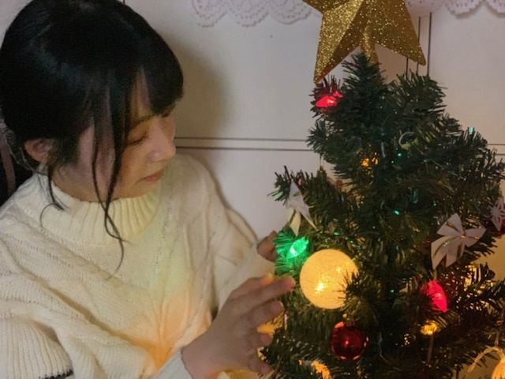

2020/1119Thu1年後のイルミネーションを見る時。佐藤璃果
こんにちは~
乃木坂46 (新)4期生 岩手県出身
佐藤璃果です。

冬ですね。
キラキラしてました。
東京ってこんなに街がキラキラするんですね
びっくりです。
ただでさえいつもキラキラしているのに
それ以上輝いていて何だか
落ち着かないです。
いまだに、アウターを忘れて
外に出てしまう日が多くて、凍えています。
あ、でも
今日は暖かかったですね＊*
昨年のクリスマスは友達と初めて
クリスマスパーティーをしました。
キッシュを作って友達がチキンとマフィンを買っておうちに来てくれるのをドキドキしながら待ってたんです♡

1年前！
~~~~~~~~~~~~~~~~~
「第71回NHK紅白歌合戦」
に乃木坂46の出場が決定致しました。
本当に有難いです。
先輩方が、4期生のみんなが
頑張ってきた日々があるから、
私もこのグループの一員となって、
この嬉しさを皆さんと
噛み締める事ができています。
会えなくても、素敵な1年の締めくくりに
していきたいですね。
~~~~~~~~~~~~~~~~~
26thシングルの発売と選抜メンバーが
先日、発表になりました。
初めて選抜発表という場を経験しました。
テレビで見ていたあの空間は
その場にいる事で余計に緊張感が増して
今にも突っ張っている空気の線が
ぷつっと切れそうなぐらいでした。
配属から約11ヶ月後の発売シングル。
選抜メンバーではありませんが、
初めての楽曲参加のシングルになります。
まだまだ未熟で一つのことに集中すると
それ以外の事がままならなくなったりと
反省する事が多くて、
情けないのですが、
暖かく見守って
応援してくださると嬉しいです。
これからもよろしくお願いします。
4期生からも選抜メンバーが増えて、
4期だけで活動している期間もみんなから
もっと吸収したいと更に思いました。
まゆたん、レイちゃん初選抜おめでとう！！
さくちゃん、かっきー、あやめん、
みんなの事を応援してます！
リハ期間ももっと積極的に、
能動的に動いていきたいです。
~~~~~~~~~~~~~~~~~~~
○｢アップトゥボーイ｣さん、11月21日発売
今までと雰囲気が違ったグラビアになって
おります...！
可愛い空間に、お花に、
ドキドキ、トキメキを感じながら、
撮影していただきました❁︎
坂道研修生15人を掲載して下さった事、
本当に嬉しくて嬉しくて。
ありがとうございます。
また、オフショット載せますね。
皆さん、ぜひよろしくお願い致します。
~~~~~~~~~~~~~~~~~~~
明日はるなぴです。
一緒に乗り越えよう。
コロッケの言い方が大好きです！
掛林の猫舌可愛かったです！
どっちにも嫉妬してしまいました( Ꙭ)
~~~~~~~~~~~~~~~~~~
皆さんにとって
素敵な1日になりますように。

ゼッケンが見えないゼッケンの写真
この間のライブの時のものです
またね。
好きな卵料理はなんですか？
について答えて下さって
とても嬉しかったです！
卵、美味しいですよね ◌
また5日後に。
いつもありがとうございます。
#42 りか
コメント(262)
選抜発表ってテレビ越しに見てるだけでも緊張感が伝わってきますよね。
佐藤さんならいつか絶対に選抜入りするって信じて待ってます！
プレッシャーかけるわけではないので誤解なさらないでくださいね（汗）
アップトゥボーイ楽しみです！絶対買います！
オフショットも楽しみにしてますね。
唐突ですが、質問です。
らじらーで岩手県と北海道の方言にある程度、共通の言葉があることがわかりました。
そこで、岩手県では「おばんです」や「したっけ」って言いますか？
もしくはだれがか使ってるのを聞いたことはありますか？
（「おばんです」→こんばんは、「したっけ」→じゃあ、そうしたら、という意味だそうです。）
らじらーネタをこすってしまい申し訳ありませんが、お答えいただけますと幸いです。
３枚目の写真、眼力があって良きでした。
それでは、また5日後を楽しみにしています。
ほんとに最近寒くなったり暑くなったりで着るものめちゃくちゃ難しいよね(´・ω・｀)
体調とか崩さないように気をつけていこうね…！！
選抜発表、初めての事ばかりですごい緊張しただろうし、メンバーにしか伝わらない緊張感とかはすごいいっぱいあるんだろうなって思います…。いつかりかちゃんがその場で名前が呼ばれる時までしっかりと応援出来たらいいなぁって思ってるよ！その日を楽しみにりかちゃんのこと推し続けます…！！
紅白りかちゃんも出るなら後ろの方かもしれないけど、めちゃくちゃ目を凝らして探しまくるね(笑)
りかちゃんにとっていい1年の締めくくりになることを祈っております。
とりあえず4期生ライブ！めちゃくちゃ楽しみにしてます！リハーサルとか振り入れとか色々頑張ってね！！！！
質問
・踊ってみて大変だった曲とかありますか？
・家にこたつはありましたか〜？(東北だと出れなくなりそう)
・りかちゃんが今アイドルなんだなぁって感じる瞬間はありますか？
・これから仲良くなりたい！って思ってるメンバー(先輩とかも含め)はいますか？
・りかちゃんはアニメとか映画とか何か好きなキャラクターはいますか？
・要望なんですけど、リカロットの時より高めのツインテール見てみたいです！！！
5日後をまた楽しみに待ってるね！
メリアより。
璃果ちゃんが選抜で活躍するのを楽しみにしてるよ(^^)
最初のお写真天使すぎませんか
彼氏目線って感じがして最高です...！
すぐにスマホのロック画面にしちゃいました。笑
-----------------------------
紅白出場おめでとうございます！！
めちゃくちゃ楽しみです...！！！
選抜発表見ましたよ〜！
画面越しでもメンバーの皆さんの緊張が伝わってきてすっごくドキドキしました。
璃果ちゃんにとって初めて参加するシングルですね！
ミーグリでお話できる日が楽しみで仕方ありません
CDについてくる生写真でも璃果ちゃんを当てられるように頑張ります！！！！
-----------------------------
質問をさせていただきます↓
・自分に似合う服ってどうやって見つけてますか？
・璃果ちゃんは字も綺麗ですが、上手く書くコツとかありますか？
・家の中にどれくらいお花を置いてますか？
ぜひ教えてください～！
-----------------------------
乃木フェスのガチャたくさん引いたけど璃果ちゃんのSSR出ないまま終わっちゃいました
でも瑠奈ちゃんと美佑ちゃんと弓木さんは出たんです...！次は絶対当てますね！！！
-----------------------------
最近は気温が上がったり夜はすごく冷えたりで困っちゃいますね
風邪をひかないようお気をつけください！
璃果ちゃんのブログが日々の癒しです。
5日後も楽しみに待ってます！
大好きです！！
あきひろ
できると良いですね。
イルミネーションよりキラキラ
輝いた璃果さんを見せてください。
璃果さんは今年はサンタさんに
どんなプレゼントをお願いする
のでしょうか。
そう言えば。
ソリを引くトナカイは全部で9頭いて
実は全員に名前がついている
んですよね。
ルドルフ、ダッシャー、ダンサー、
プランサー、ヴィクセン、ドンダー、
ブリッツェン、キューピッド、コメット。
なんだかもう鈴の音が聞こえ
てきそうです。
ステキな週末を。
りかちゃんが選抜入るまで応援するねー！
あ、もちろん入ってからも応援するからね！笑
はーい！また、ブログ更新まで、待ってるね！
では、また、ばいわんわん！笑笑
ゼッケン姿も可愛いですね
今日は暖かい1日でしたね
でもこれから寒くなるそうなのでアウターをお忘れなく！
またねー
今回は早くコメントできて嬉しいです
もうクリスマスなんですね､､､
なんだかまだ全然先な気がします
時々上着忘れちゃうのとかすごく分かります
なんかまだ冬じゃない気がしちゃいませんか？
初めての楽曲参加、選抜入りしていなかったのは悔しかったけど楽しみにしています
最近またコロナウイルスの感染者も増加しているので本当にお気をつけて､､､！
それでは！
26th発表あったね、、、 新4期もオンラインイベあるのかな？？？まだ1回もお話できてないから、りかちゃんと話してみたい！！！期待！！！！！
紅白も4期ライブも26thもたのしみなこといっぱいあるな！！だから明日からのテストも頑張る〜(><)
コロナ増えてきて心配だけど体調には気をつけてお仕事頑張ってください！！また5日後楽しみにしてるね！！
私はイルミネーションに行く予定がないので
家でお菓子作りをしようかなと考えてます笑
最近メイクをするようになったのですが
璃果ちゃんが使っているメイク道具を教えて欲しいです！！
選抜発表の乃木坂工事中、リアタイして見ました。
乃木坂のファンになって、推しメンができたのが璃果ちゃんが初めてだったから、選抜私もドキドキしながら見ていました(T_T)
璃果ちゃんの歌声が入るCDを買うのが楽しみです！
ミーグリでお話できるのも楽しみにしています( ˶˙ᵕ˙˶ )
同期が選抜に入ることを素直に喜んで応援できる璃果ちゃんの事、尊敬します。
もうすぐ12月でクリスマスですね。
璃果ちゃんのクリスマスエピソードとかあったら教えて欲しいです！
今日も大好きです☺︎
冬ですねーって、萌え袖にビッグシルエ
ットなアウター。可愛さ全開じゃん。
そう、東京と言っても、秋冬は空気が澄
んでくるから、いろんなものが鮮明に見
えてきますね。
今年のクリスマスは少し我慢だね。
まあ、サンタさんにもマスクさせたので
は、可哀そうだものね。休んでもらいま
しょう。
紅白歌合戦出場おめでとう。
僕も東京の冬見てみたいです
東北は今日ものどかです
コロナがおさまったら是非来てください
質問：りかちゃんは、かまくら作った事ある？？
東京は年中キラキラですー！
最近とっても暖かいですが、
もうクリスマス気分ですね♪
紅白出場とっても嬉しいし、
初出演いっぱい楽しんでね☆
選抜発表ドキドキでしたよね！
初楽曲参加も誇らしいですよ✨
グラビアもとっても楽しみです！
ゼッケンの写真も凛々しいです✌
一番好きな卵料理は卵焼きかな～☺
りかちゃん今日も１日お疲れ様です。
りかちゃん今日も可愛いです。
今日はお仕事でした。
今日は凄く忙しくて大変でした。
明日はお仕事お休みなのでゆっくりと休みます。
これからもお仕事頑張って下さい。
自分もお仕事頑張ります。
これからのブログを楽しみにしてます。
ブログ更新ありがとう！
1枚目の写真がめちゃくちゃ可愛いくて、「彼女と○○なうに使っていいよ」って数年前に流行った写真の構図みたいやなって思いました。
UTBも告知ありがとう！絶対買いますねーー
あと、2個前のブログで2泊3日で仙台方面に旅行行くのでオススメ教えてくださいって質問に答えてくれて、改めてありがとう！
今日まで仙台方面行ってきて、璃果ちゃんがオススメしてくれた「ひょうたん揚げ」買って食べました！
アメリカンドッグみたいやけど、でも笹かま使ってるから、アメリカンドッグよりヘルシーで、めちゃくちゃ美味しかったです。
オススメしてくれて、本当にありがとう。
あとは、璃果ちゃんの出身である岩手にも行きました！平泉の中尊寺しか行けてないけど、人がめちゃくちゃ優しくて、璃果ちゃんはこんな素晴らしくて良い県の出身なんやなと思いました。
それでは寒さと暑さが激しい時期ですがお身体にはお気をつけて頑張ってください！
いつか選抜に選ばれるといいですね。僕も精一杯応援させてもらいます。
笑ってる写真が増えてきましたね。
これも一歩一歩だよね。
もう街もクリスマス色強なってきてるなぁ。
12月入ったらクリスマス一色やね。
この時期になったらもう冬やなぁっていつも思う。
イルミネーションも綺麗やね。
りかちゃんはイルミネーションとか好き？
キレイなところ見に行きたいな。
紅白出場おめでとう！！
今年も出してもらってありがたいね。
一年最後の日までメンバーのパフォーマンス見れるのは嬉しい。
今年はりかちゃんも出れるかな？
楽しみにしてるね。
26枚目選抜発表！
センターは美月やね。
4期生からもまゆたんとレイちゃんが初選抜。活躍が楽しみ！
いつかりかちゃんの名前が呼ばれること楽しみに待ってます。
そん時は一緒に喜びたいね！！
ではでは体調には気をつけて。
次のブログも待ってます。
いつもありがとう。
イルミネーション見に行きたいなぁ、、、
ビブス姿の璃果ちゃん好きなんです！！
坂道研修生の頃は何色にも染ってなかったビブスが紫色に染ってる、、
感動です、、
質問です( ⸝⸝⸝¯ ¯⸝⸝⸝ )♡
◎ 最近のマイブームありますか??
◎ 生写真撮影の時たくさんの衣装着るの楽しいですか??
◎ さつまいもの焼き芋以外の美味しい食べ方ありますか??
◎ 今年受験生なので応援してください( இ﹏இ )
璃果ちゃんのおかげで毎日Happyです！！
いつもほんとにありがとう！
まなより
ことが〜♪
好きだ〜♪
毎回読み応えがあるブログ嬉しく思います
4期生がまた選抜メンバーになれて
良かったです
璃果ちゃんも近いうちに選抜入りすると
いいなと思うし全力で応援します
紅白歌合戦出場おめでとうございます
3坂道出場だからよかったです
26枚目のフォーチュンミュージックでの
発売の詳細今から待ち遠しいです
璃果ちゃんにたくさん応募するから
コメント、失礼します！
ブログ更新、ありがとう！
街にはもうイルミネーションがいっぱいなんだね。
確かに東京はこの時期凄く明るいよね。
雪景色の岩手県とは大分様相が違うのかもしれない。
ただその明るさにりかちゃんが合ってて可愛いよ。
紅白の出場が決まったね！
自分も嬉しいです！
今年はいつもと違う年だけど、どんな演出になるんだろうね。
楽しみだなー。
選抜発表の場、やっぱり緊張感が凄かったんだね。
5人にとっては初めての楽曲参加となるシングル。
どんな曲になるんだろうか。
発売が待ち遠しいです。
アップトゥボーイも楽しみ。
それでは、この辺で。
おやすりかちゃんー
新しいシングル楽しみです。どのポジションでも応援します！
去年のクリスマスは同じく友達とクリパしたな笑
じゃあ来年はりかちゃんと一緒にクリパかな？笑
冗談はさておきもう冬が来ちゃうから最近寒くなってきたね
風邪ひかないように4期生LIVE頑張ってね！
またコメントするね
璃果ちゃん♪
ウォウウォウウォ〜♪
もう冬だね。でもここ最近は暖かいね。
最近は大学の卒業制作の為に夜中起きて作業することが多くて、結局朝になって、お腹すいてコンビニにご飯買いに行くことが多いんだけど、その時の晴れた空めっちゃ気持ちかった！笑
暖かい時に外に出ると気分がリフレッシュできていいね。
イルミネーションか、地元とかは田舎だからそんなのないけど、この前京都いった時にイルミネーションやっててめっちゃ綺麗やったなぁ。東京のイルミネーションも直接見てみたいな。
僕は大学入ってからクリスマスはずっと学校です笑
ここ最近はクリスマスの思い出ないなぁ。サンタさんもこうへんし笑
プレゼント欲しいなー。
サンタさんの代わりにプレゼント下さい笑
紅白決定おめでとう！
今年も見るぞぉ！
なんの曲披露するかめっちゃ楽しみ！
璃果ちゃんのこと探すね！
選抜発表あったね。初選抜、初センターだったり、色々変化あったね。今回からは新4期もシングル参加するから楽しみや。なんか曲参加するかなぁ。璃果ちゃんが歌う歌絶対好きになるわ笑
頑張っていこうね！
璃果ちゃんにとっても素敵な1日になりますように。
じゃ、5日後に。
またブログ更新楽しみにしてます！
(=ﾟωﾟ)ﾉﾎﾅ､ﾏﾀ!!
今回のシングルは参加するんですね！！
選抜じゃなくてもりかちゃんがみられることが
とっても嬉しいです！！楽しみ〜！！
いつかりかちゃんを選抜で見られるようにずっと応援し続けます！！ずっと一緒にいます！大好きです
今年新しく買ったアウターとかありますか？
りかちゃんの着る服すごくすきなので参考にします！！
いつも笑顔にさせてくれてありがとうございます
明後日発売の｢アップトゥボーイ｣、勿論発売日に買うね！
12月の4期ライブも超超楽しみです！
りかちゃんが腕によりをかけたキッシュでご友人を持て成した昨年のパーティー。今年はどんなクリスマスを迎えるのでしょうか。
今年も乃木坂が『紅白歌合戦』に出場決定という嬉しいお知らせが。願はくはフルメンバーのステージで大晦日を迎えられんことを。
りかちゃん達にとって初の音源参加となる26thシングルは新たな胎動の予感。記念すべき作品となります様に♪
『アップトゥボーイ』追ってチェックします。
去年のクリスマスは同じく友達とクリパしたな笑
じゃあ来年はりかちゃんと一緒にクリパかな？笑
冗談はさておきもう冬が来ちゃうから最近寒くなってきたね
風邪ひかないように4期生LIVE頑張ってね！
またコメントするね
ここ数日は冬らしからぬ暖かい日が続いてるね。。。おいらも今日はジャケットなしで出かけてました（*´∀｀*）
楽しいクリスマスの思い出教えてくれてありがとう♪
今年はメンバーとクリスマスを向かえるのかな？
紅白出場決定おめでとう(*'∇')/ﾟ･:*【祝】*:･ﾟ＼('∇'*)
璃果ちゃんにとって初めての紅白。。。すべての瞬間を心に焼き付けて楽しんでください♪
TVの前で応援してるよ(o^-')b
璃果ちゃんにとって初めて参加するシングルも決まったねヾ(≧▽≦)ﾉ
選抜には入れなかったけど璃果ちゃんが初めて正式に参加する楽曲がどんな曲なのか。。。楽しみにしてるね♪
そしてシングルが決まったということは握手会。。。はまだ無理としてもオンラインミート＆グリートはあるのかな。。ついに初めて璃果ちゃんとお話しできるのが待ち遠しいねo(^-^o)(o^-^)o
アップトゥボーイももちろん買うよ♪
今回はどんな璃果ちゃんが見られるのかなぁ。。。(n*´ω`*n)
それじゃまたねー＼(*⌒0⌒)b
楽曲デビューおめでとうございます！
どんな曲になるのかとっても楽しみです♪(≧∀≦）
○質問ですっ
好きなクリスマスソング教えてください☆
*˙︶˙*)ﾉ"ﾏﾀﾈｰ
ゼッケンの写真でもかわいいから
ゼッケンが見えるゼッケンの
写真でもかわいいんだろうなぁ～♪
応援します。
りかたん更新ありがとうー！！
最近コロナ増えてきたね、、私の学校はまだ出てないかもだけど首都圏だから周りの学校どんどん休校になってきてる、、大変そうだよね、コロナ気をつけて！
今日は暑かったね~、私は骨折治ったから部活でオーボエできたよ！！久々のワイシャツでの楽器演奏、青春って感じだった！笑
しつもん！！！
ハリポタの4D、みますか？？？
だいすき！ 【な な り か 171】
な な り か (夏希)より
選抜発表の雰囲気を経験しちゃったね
私的にはバナナマンさんの前での発表が見たいな
久しくやってないよね
少し寂しいです
シングル楽しみだね
４期生楽曲もあると予想しています
選抜発表は独特の緊張感があるんでしょうね
いつか璃果ちゃんが呼ばれる日が来て
その放送を見た時はどんな感情が浮かぶんだろう？
好きな卵はコメントを打った翌日に
かき玉汁が食堂のスープで出てこれだと思い五日遅れで書かせてもらいました
イルミネーション綺麗だね！上着忘れる事自分もあるので気持ちすごくわかります！紅白おめでとうございます紅白楽しみにしてます。
26枚目初のシングル参加だね！璃果ちゃんの歌声を聴くのをとっても楽しみにしてますね
林ちゃんと掛橋ちゃんの猫舌可愛かったね嫉妬してるの想像したら可愛くて最高ですw おやすみなさい
東京には、この時期（11〜12月）、行ったことがないので、実感はないんだけど、テレビとかで見るとキラキラしてるよね。
どっから持って来たんだ、そのキラキラを！？ってくらいキラキラだよね。
今日は、暖かかった。
というより、暑かったです。
北日本の日本海側ですら、25℃で夏日。
たぶん、岩手も同じくらいだったと思います。
こういうのを、小夏日和というらしいです。
小春日和は聞いたことあるけど、夏バージョンもあるとはね。
おばんです♡
仙台市若林区出身、東北大好き！
浪速の商人（あきんど）です。
大阪は夏日になりました
観測史上一番遅い夏日らしい
一回ぎゅっと寒くなって、コートまで着たのに
調子狂って体調を崩してます。
さすがに今日はアウターなしでも
いいと思うけど
朝晩は気をつけようね。
選抜発表の空気を
じぶんの言葉できちんと伝えてくれて
ありがとう
ドキドキが伝わってきました。
ほんとに素敵な日本語。
初参加楽曲。
ジャケットのどこにどんな表情で
載ってくれるか期待してます。
たくさん勉強して有意義な期間に。
ずっと歌える素敵な曲だといいな。
ウインターイルミネーションが
盛んになったのはたぶんこの10年くらいかな
LED照明が一般的になったのが大きくて。
僕が東京に出た頃は
高級ホテルのロビーとかを除いて
まだツリーはお家で飾るもの、でしたよ。
コロナ禍で大変だけど
穏やかに暮れてゆくといいね。
紅白出場おめでとうございます(^^)/
岩手でも喜んでもらえそうだね
お家で応援するよ！
ではでは、おやすみ。
んでなっ♡
浪速の商人（あきんど）
コメントする

PROFILE
新4期生リレー
202104
| SUN | MON | TUE | WED | THU | FRI | SAT |
|---|---|---|---|---|---|---|
| 1 | 2 | 3 | ||||
| 4 | 5 | 6 | 7 | 8 | 9 | 10 |
| 11 | 12 | 13 | 14 | 15 | 16 | 17 |
| 18 | 19 | 20 | 21 | 22 | 23 | 24 |
| 25 | 26 | 27 | 28 | 29 | 30 | |

ハロウィンが終わると、主に都内は
完全にクリスマスモードに切り替わりますね〜
今ほどあちこちキラキラした感じになったのは
せいぜいここ十数年だと思いますが、
心があったかくなってよき…
イルミネーションでハッスルしてる一般家庭もあり、
夜道が明るくなるのもよき…
○質問○
自販機でつい買ってしまうものってありますか？